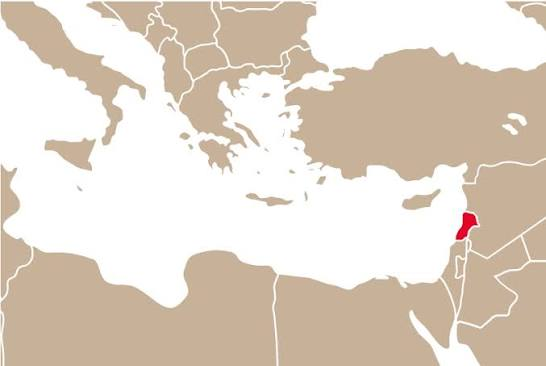

La cucina libanese è considerata una delle espressioni più ricche, salutari e raffinate di tutto il Mediterraneo Orientale.
Rappresenta una perfetta sintesi tra la tradizione culinaria araba e le influenze mediterranee, con note francesi.
Si basa sull'uso massiccio di verdure di stagione, legumi (soprattutto ceci e fave), frutta fresca e secca (pinoli, mandorle, noci). Si consuma prevalentemente carne di agnello, montone e pollo (rigorosamente Halal), spesso cucinata alla griglia sotto forma di spiedini. Il maiale è quasi totalmente assente per motivi religiosi.
• Hummus: Crema di ceci, tahina, limone, aglio e olio d'oliva.
• Baba Ganoush (o Mutabal): Crema di melanzane polverizzate sul fuoco (che dona un sapore affumicato) con tahina e limone.

• Falafel: Polpette fritte di ceci e fave speziate, croccanti fuori e morbide dentro.

• Tabbouleh: L'insalata simbolo del Libano, composta da tantissimo prezzemolo tritato finemente, menta, pomodori, bulgur (grano spezzato) e limone.

• Fattoush: Un'insalata mista arricchita con pezzi di pane arabo fritto o tostato e summacco.

• Kebbeh: Polpettine a forma di ogiva a base di carne tritata e bulgur, farcite con carne speziata e pinoli (esistono anche versioni crude o al forno).

• Labneh: Un formaggio-yogurt colato, cremoso e acidulo, spesso servito con olio e za'atar.